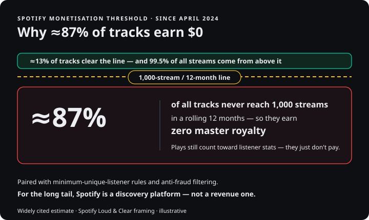
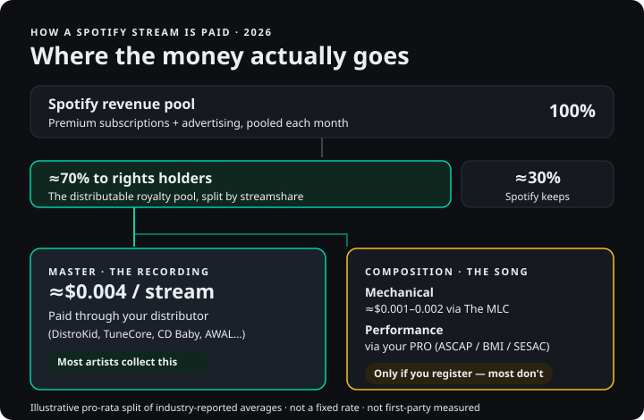
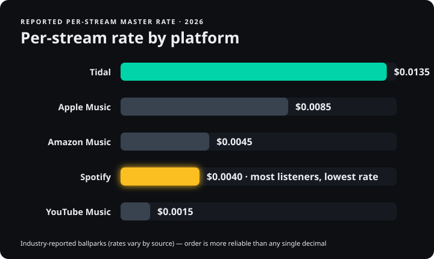
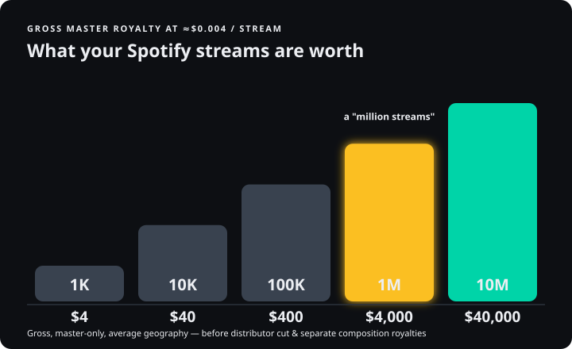

Spotify pays roughly $0.003 to $0.005 per stream in 2026 — about $0.004 on average — but there is no fixed rate. Spotify divides a pooled share of its subscription and ad revenue across every stream on the platform, so your payout shifts month to month and country to country. And that figure is only the master royalty paid to your distributor; your songwriter (composition) royalties are paid separately, and most independent artists never collect them.
Updated June 2026 | Music Business
You've heard Spotify pays "a third of a cent." That's roughly true — and almost useless. Here's what Spotify actually pays in 2026, why most tracks earn nothing, how the money really splits, and the royalties you're probably not collecting — with a calculator to run your own numbers. Unlike the distributor-run blogs that dominate this question, we don't sell distribution or take a cut of your royalties, so there's nothing here we need you not to know. This guide is for any artist, songwriter, or manager trying to understand what a stream is really worth — and how to capture every cent of it.
The Honest Answer: What Spotify Actually Pays
There is no per-stream rate. That single sentence is the thing distributor blogs bury, because it complicates the tidy headline number. Spotify does not pay a fixed amount each time someone plays your song. Instead it operates a pro-rata revenue pool: it collects all the money it earns from Premium subscriptions and advertising in a given period, sets aside roughly 70% of it for rights holders (keeping about 30% itself), and then divides that pool across every stream on the platform. Your payout is your share of that pool — if your music accounts for 0.001% of all streams in a month, you receive roughly 0.001% of the distributable revenue.
This is why the "rate" floats. When Spotify signs more Premium subscribers or ad spending rises — as it reliably does in the fourth quarter, when holiday advertising spikes — the pool grows and the effective per-stream payout ticks up. A slower month nudges it back down. Back the math out across the whole platform and the blended average in 2026 sits between $0.003 and $0.005, with most reporting clustering around $0.004. Spotify's own scale is enormous: as of early 2026 it reported around 761 million monthly active users and roughly 293 million Premium subscribers, so the pool is large — but it is split across an astonishing volume of streams.
The trend, at least, is up. Industry trackers that analyse large samples of real royalty statements put the US per-stream figure at roughly $4.43 per 1,000 streams in January 2026 — a climb of about 34% since 2023, driven by Premium price increases (the US Individual plan rose past $11 and then past $12 across 2024–2025) and the threshold policy we'll get to next. That works out to roughly $0.0044 for a US stream, toward the upper end of the global band. None of this is a number Spotify publishes per stream; it is reverse-engineered from aggregated payout data, and you should treat every figure in this guide the same way — as an industry-reported average, not a guaranteed rate.
So when someone asks "how much does Spotify pay per stream," the honest answer is a range with a caveat: about a third to half a cent, on average, this month, in your markets — and even that is the smaller half of the story.
What Counts as a Stream (and What Doesn't)
Before the money math means anything, you need to know what actually triggers a payout, because not every play of your song is a billable event. On Spotify, a stream counts toward royalties only once a listener has played the track for at least 30 seconds. Skip before that mark and the play registers nothing — no royalty, no contribution to your monetisation threshold. This is why retention in the first half-minute is an economic metric, not just an artistic one: a song that hooks listeners past 30 seconds is, very literally, a song that gets paid, and a strong intro is worth more than a strong bridge that nobody reaches.
A few other realities sit under the surface. The same listener playing your track repeatedly does generate repeat streams, but Spotify's systems watch for unnatural patterns, and artificial or manipulated streams are stripped out before royalties are calculated — sometimes with penalties attached to the offending release. Pre-saves, library adds, and playlist follows are engagement signals that help the algorithm, but they are not streams and pay nothing on their own. And a 30-second play of a three-minute song pays exactly the same as a full listen: the per-stream system rewards the qualifying play, not the duration beyond it. Understanding that boundary changes how you think about everything downstream — your real "rate" is the average payout across the plays that actually clear the 30-second bar, in the markets where they happen.
Why ~87% of Tracks Earn $0: The 1,000-Stream Threshold
Here is the fact almost nobody leads with. Since April 1, 2024, a track on Spotify earns nothing on the master side unless it has reached at least 1,000 streams in the previous rolling 12 months. Fall below that line and your plays are demonetised — the streams still count toward your listener stats, but they generate no royalty.
The scale of who this affects is staggering. By widely cited estimates, roughly 87% of all tracks on Spotify fail to clear the 1,000-stream threshold. Spotify hosts on the order of 100 million-plus tracks; only a fraction reach the qualifying line. Spotify's own framing is that 99.5% of streams come from tracks above the threshold, so demonetising the long tail redirects only "tens of millions of dollars a year" — money it says it funnels back into the qualifying pool rather than spraying out in sub-cent payments that often cost more to process than they're worth. Both things are true at once: it is a small share of total streams, and it is the overwhelming majority of artists.

For the indie reader this is the single most important number on the page, and it reframes the per-stream question entirely. If you are a new or small artist, your effective per-stream rate on a fresh track is not $0.004 — it is zero, until that track crosses 1,000 plays in a 12-month window. Only then does the meter start. The policy is defensible as anti-fraud hygiene (it also pairs with minimum unique-listener requirements aimed at fake-stream farms), but its practical message is blunt: for the long tail, Spotify is a distribution and discovery platform, not a revenue platform.
It's worth knowing that this threshold is a Spotify policy. As of 2026, Apple Music, Amazon Music, and Tidal have not adopted an equivalent rule — every qualifying stream pays from the first play. That asymmetry matters when you think about where to push listeners, and it's a thread we pick up in the platform comparison below.
The 1,000-stream rule also doesn't travel alone. Spotify paired it with a minimum unique-listener requirement — a track can't monetise on the strength of a handful of accounts replaying it thousands of times — and with stiffer penalties for detected stream manipulation, including charges levied against labels and distributors whose releases show fraudulent activity. The intent is to drain the swamp of bot farms and fake-stream services that had been siphoning real money out of the pool. The side effect, intended or not, is that the bar for a genuinely independent artist to start earning is now a real, non-trivial hurdle: you need a thousand legitimate plays, from enough distinct listeners, inside a rolling year, on each track, before the first cent appears. For an artist releasing steadily to a small audience, a meaningful share of the catalog may sit permanently under that line.
Where the Money Actually Goes: Master vs. Publishing
This is the section that pays for your reading, because it's where most independent artists leave money on the table — and they don't even know it's there.
A single song is actually two copyrights, and they get paid separately. There is the master (the sound recording — the specific recorded performance you hear), owned by the artist or their label. And there is the composition (the underlying song — the melody and lyrics), owned by the songwriter and their publisher. Every Spotify stream generates money for both copyrights, but the two flows travel through completely different pipes, arrive at different times, and require different registrations to collect.

The famous "$0.003 to $0.005 per stream" figure is almost always the master royalty only. That's the sound-recording payment, and it reaches you through your distributor — DistroKid, TuneCore, CD Baby, AWAL, or a label. It is the larger of the two pieces, and it's the one most artists actually receive, because signing up with a distributor is the unavoidable first step to getting your music on Spotify at all.
The composition side is where the leakage happens. It splits into two royalties of its own. The mechanical royalty compensates the reproduction of the song each time it's streamed; in the US it is collected by The MLC (the Mechanical Licensing Collective) and runs roughly $0.001 to $0.002 per stream — a real, separate sum on top of your master royalty. The performance royalty compensates the public performance of the song; Spotify pays a blanket license to performing rights organisations (ASCAP, BMI, SESAC in the US), and your PRO pays your songwriter share. Neither of these reaches you automatically. If you wrote your song and never registered with a PRO and The MLC, those royalties accrue against your work and you simply don't claim them.
To make it concrete, picture a single US stream worth a notional half-cent in total rights-holder value. The largest slice — the master royalty, on the order of $0.004 — flows to whoever owns the recording and arrives via your distributor. A smaller slice, perhaps a tenth to a fifth of a cent, is the mechanical, routed through The MLC. A third slice is the performance royalty, routed through your PRO. If you are a fully independent artist who wrote and recorded your own song, all three of those slices are yours — but only the first one shows up automatically. The other two require that you exist, as a registered entity, in the systems that collect them. Skip the registration and you've handed a third of the song's value to a black box. That is the difference, repeated across every stream you'll ever earn, between collecting a master-only rate and collecting the whole thing.
How much money is genuinely sitting unclaimed? When The MLC launched in 2021 it received a historical "black box" transfer of roughly $424 million in accrued mechanical royalties that earlier services had collected but never matched to a songwriter. Years later, reporting still put around half of that initial sum as unmatched, and new unmatched mechanicals keep accruing on top of it. A meaningful slice of that belongs to independent artists who never filed. Registration with The MLC is free; the only thing standing between a self-releasing songwriter and those pennies-per-stream is the paperwork. (For the full mechanics of who collects what, see our companion guide on how music royalties work and the breakdown of music publishing.)
One live 2026 wrinkle is worth flagging, because it directly affects the composition pool: The MLC and Spotify remain locked in a legal fight over Spotify's decision to bundle audiobooks into Premium, which reclassified the subscription in a way that reduced the mechanical royalties owed to songwriters. A court initially sided with Spotify, the MLC revived an amended claim, and the matter is still working through appeal in 2026 — with potentially hundreds of millions in songwriter royalties hanging on the outcome. You can't control that fight, but you should know the composition pool is contested terrain, which makes claiming your verified share all the more worth doing.
The takeaway is simple and it's the heart of this guide: if you only collect the master royalty, you are collecting part of what your stream is worth. The artists who treat distributor choice and PRO-plus-MLC registration as income decisions — not administrative chores — are the ones whose blended per-stream rate climbs from $0.004 toward $0.005–$0.008. The rest leave the difference on the table.
Spotify vs. Apple, Tidal, Amazon, YouTube & Deezer
Spotify is, by most public comparisons, near the bottom of the per-stream league table. Its enormous free, ad-supported tier is the main reason — fewer than half of its users pay, and an ad-supported listener generates far less revenue per play than a Premium subscriber, which drags the blended average down. Here is roughly where the major platforms sit in 2026, using widely reported per-stream master-side averages. Treat every figure as an industry-reported ballpark; the calculator below lets you run your own numbers against them.

| Platform | Reported per-stream (master) | Notes |
|---|---|---|
| Tidal | ~$0.013–$0.015 | Highest of the majors; small, all-premium audience |
| Apple Music | ~$0.007–$0.010 | Roughly 2× Spotify; no free tier; states a 52% rights-holder payout |
| Amazon Music | ~$0.004–$0.005 | Strong voice-assistant audience via Alexa |
| Spotify | ~$0.003–$0.005 | Largest audience by far; free tier dilutes the rate |
| YouTube Music | ~$0.001–$0.002 | Among the lowest; video/Content ID is separate and lower again |
| Deezer | user-centric model | Pays by individual listening, not a flat pool — see below |
Industry-reported pro-rata averages, not guaranteed rates — your real payout varies by country, tier and month. Master = your distributor; composition (mechanical + performance) is collected separately and only if you're registered with The MLC and a PRO. Not first-party measured.
The pattern is consistent across independent analyses: Tidal pays the most per stream and reaches the fewest people; Spotify pays among the least and reaches the most. Reported numbers vary by source and methodology — one tracker's Tidal figure won't match another's because they sample different catalogs and count revenue differently — so the order is more reliable than any single decimal. Apple Music is the notable middle ground: it has publicly stated a fixed payout of around 52% of revenue to rights holders, and because it has no free tier, every stream comes from a paying subscriber, which keeps its per-stream rate roughly double Spotify's.
Two platforms break the simple "flat rate" frame and deserve their own footnote. Deezer rolled out an artist-centric (user-centric) payment model — first in France in 2024, with the rollout widening since — instead of pooling everyone's subscription money and splitting it by total streams, it allocates each subscriber's fee toward the artists that subscriber actually listens to. That changes the economics meaningfully for artists with dedicated fanbases, so a single flat per-stream number understates what Deezer can pay an engaged audience. And YouTube is really two things: YouTube Music's per-stream rate is low, but the broader YouTube platform monetises user-generated content through Content ID at rates that are different again — and the sheer size of its audience means even tiny per-play figures can compound.
The strategic point that falls out of this table is not "abandon Spotify for Tidal." Reach matters more than rate. Ten thousand Spotify streams at a low rate will out-earn a few hundred Tidal streams at a high one. The smart move is to distribute everywhere, lean on Spotify and Apple for algorithmic discovery — see our Spotify vs. Apple Music comparison — and treat the higher-paying platforms as places to direct an already-engaged fanbase rather than as a reason to walk away from the biggest audience in music.
It also helps to read each platform for its character rather than its decimal. Tidal's high rate is a function of a small, all-paying, audiophile-leaning base — wonderful if your audience lives there, but it is the smallest of the majors and won't move the needle for most artists on volume. Amazon Music carries a quietly valuable voice-assistant audience: every "Alexa, play something for dinner" is a stream, and that ambient, low-intent listening adds up across a large installed base. Apple Music's appeal is the absence of a free tier and a stated, transparent payout share, which makes its economics easier to trust. And Spotify's weakness — that diluting free tier — is inseparable from its strength, the enormous funnel of casual listeners who discover music there before they ever pay for it. No single platform is "best"; the right mix depends entirely on where your particular listeners actually are.
Why Your Per-Stream Rate Varies So Much
If two artists both rack up a million streams and earn wildly different amounts, the explanation is almost always the same handful of variables. Understanding them turns "the rate" from a mystery into something you can partly influence.
Listener geography is the biggest lever. Spotify charges very different subscription prices in different countries, and each country has its own royalty pool sized to its revenue. A Premium subscription costs around $12 in the US but a fraction of that in India, and the per-stream value tracks accordingly. A stream from a high-ARPU market — the US, the UK, Scandinavia, Australia — can be worth several times one from a low-priced market. Illustratively, a premium stream in a country like Norway might be valued near $0.0068, while an ad-supported play in a low-ARPU market could fall toward $0.0008. Those exact decimals are reported estimates, not guarantees, but the ratio is real and large: where your listeners live can swing your blended rate by 5× or more, and it explains most of the gap between two artists with identical stream counts.
Subscription tier is the second lever. A play from a paying Premium subscriber draws from a much richer pool than a play from a free, ad-supported listener. You don't control which tier a given listener is on, but an audience that skews Premium simply pays better per stream.
The size of the monthly pool is the third. Because the system is pro-rata, your rate rises and falls with Spotify's overall revenue and total stream volume that period — which is why Q4 tends to pay a little more and why no two months are ever quite identical. The composition pool in particular has been squeezed by Spotify's move to bundle audiobooks into Premium, which reclassified the subscription in a way that lowered the mechanical royalty rate flowing to songwriters — the change at the centre of the MLC dispute above. You can't influence the pool's size, but it's useful to understand that part of your rate's month-to-month wobble is a macro number, set far above your release, that you're simply a fractional shareholder in.
Finally, Discovery Mode is worth a wary mention. It's Spotify's program that boosts a track's algorithmic placement in exchange for a reduced royalty on the streams it generates. It can grow your reach, but it does so by trimming your per-stream rate on those plays — a trade, not free promotion, and one to enter with eyes open.
How Much Is 1,000, 100k, 1M, or 10M Streams Worth?
This is the milestone math everyone searches for, so here it is in plain terms — using the common $0.004 per stream working average for the master royalty, before your distributor's cut and before the composition royalties you'd collect separately. Run your own figures in the calculator above; these are the round-number anchors.

| Streams | Master royalty (~$0.004) | Reality check |
|---|---|---|
| 1,000 | ~$4 | The minimum to monetise a track at all |
| 10,000 | ~$40 | A first real flicker of income |
| 50,000 | ~$200 | A track gaining genuine local traction |
| 100,000 | ~$400 | Roughly the level of a modestly successful release |
| 250,000 | ~$1,000 | A useful benchmark: ~250k streams ≈ $1,000 |
| 500,000 | ~$2,000 | Halfway to the headline "million streams" figure |
| 1,000,000 | ~$4,000 | A "million streams" is around $4k master, pre-splits |
| 5,000,000 | ~$20,000 | A breakout track for an independent artist |
| 10,000,000 | ~$40,000 | Genuine traction — still gross, still pre-cut |
A few honest caveats sit underneath that table. These are gross figures: your distributor takes its share first (DistroKid and TuneCore charge flat or per-release fees and keep 0% of royalties; CD Baby keeps around 9%; some services and label deals take 15–30% or more), so the net in your account is lower. They are master-only: a fully independent, PRO-and-MLC-registered songwriter collects the mechanical and performance royalties on top, which is what nudges the real blended figure upward. And they assume an average geography — a US-heavy audience earns more per stream, a low-ARPU audience less. The widely repeated idea that you need somewhere north of a million streams a month just to approach a modest living wage is, unfortunately, accurate on the master side alone. It's also exactly why collecting the composition royalties is not optional for anyone serious about the money.
There's a timing footnote, too: streaming royalties don't arrive instantly. Expect a delay of roughly two to three months on the master side (January's streams typically pay out around March or April), and longer still for the composition royalties that flow through The MLC and your PRO — sometimes three to nine months. Distributor minimum-payout thresholds ($10–$100, depending on the service) can also gate when the money actually reaches your bank rather than just accruing.
How to Earn More — and Collect Everything You're Owed
If you've read this far, you already know the two ways to make a stream worth more: increase the value of each play, and stop leaving royalties uncollected. Here's how that translates into action.
Register everywhere a royalty hides. This is the highest-leverage move and most artists skip it. Sign up with a PRO (ASCAP, BMI, or SESAC in the US) as both songwriter and, where applicable, publisher, so you collect the full performance royalty — our ASCAP vs. BMI guide walks through choosing one. Register your songs with The MLC — it's free — so the mechanical royalties stop accruing into the unclaimed black box and start reaching you instead. If you'd rather not manage it yourself, a publishing administrator handles both for a percentage. However you do it, this is the single change that converts a master-only $0.004 into a blended rate closer to $0.005–$0.008.
Choose your distributor as an income decision. A flat-fee distributor that keeps 0% of your royalties versus one that takes a percentage is a permanent difference in your net per-stream rate, multiplied across every play you'll ever earn. Run the numbers for your release volume rather than defaulting to the first name you recognise — our DistroKid vs. CD Baby comparison and distribution guide lay out the trade-offs.
Geo-target the markets that actually pay. Because high-ARPU listeners are worth multiples of low-ARPU ones, where you concentrate promotion changes your blended rate. Check your distributor dashboard for the geographic breakdown of your existing streams; if a disproportionate share of your revenue (not just your plays) comes from the US, UK, and Nordics, that's where targeted promotion compounds fastest.
Get tracks across the 1,000-stream line. Every track sitting below the threshold is earning you exactly nothing. Concentrating early promotion to push your strongest songs over 1,000 plays in a 12-month window — rather than spreading thin across a large catalog — turns dormant uploads into monetised ones. Our guide to getting more streams on Spotify covers the playlisting and release tactics that do this.
Don't optimise for rate at the expense of reach. It's tempting to chase Tidal's high per-stream figure, but Spotify's audience size usually means more total dollars even at a lower rate. Distribute to every platform, use the high-rate services to monetise your most dedicated fans, and let the big platforms do the discovery work.
Treat streaming as one income line, not the income. This is the strategic reframe that the per-stream obsession obscures. For all but the largest catalogs, the math on streaming alone is unforgiving — a million plays nets a few thousand dollars before splits, and most tracks never clear the threshold to earn at all. The artists who build sustainable careers in 2026 use streaming for what it's genuinely good at, discovery and reach, and then convert that reach into income streams that pay multiples of a fraction of a cent: direct-to-fan sales, vinyl and merchandise, sync placements where a single licence can outearn years of streams, live performance, and an owned audience (an email list, a community) that doesn't depend on any platform's algorithm or payout policy. A stream is worth more as a discovery event that leads somewhere than as a royalty in isolation. Read the per-stream number honestly, collect every royalty it generates — and then build the parts of your career that aren't priced in thousandths of a dollar.
Last reviewed June 2026 · refreshed quarterly, because these numbers move. The figures here are industry-reported averages, not first-party MPW measurements and not numbers Spotify publishes per stream. They are compiled and cross-checked against public royalty-data analyses (Duetti, Soundcharts, and large-sample royalty-statement studies), distributor disclosures (DistroKid, TuneCore, CD Baby, AWAL), Spotify's own Loud & Clear reporting and SEC filings, the Mechanical Licensing Collective, and Copyright Royalty Board rulings. Where independent sources disagree on a decimal — and on per-stream rates they routinely do — we give you the range and trust the order over any single figure. Your actual payout will vary by country, subscription tier, distributor cut, and the month's revenue pool. Nothing here is financial or legal advice; for decisions about your own catalog, confirm current rates with your distributor, PRO, and The MLC.
Practical Exercises
Model your last release Beginner
Take your most recent release and its actual stream count from your distributor dashboard. Run it through the calculator above at your real audience market and distributor cut. Compare the master figure it returns to what actually landed in your account — and note the separate composition line. That gap between "master only" and "everything you're owed" is your to-do list for the next two exercises.
Close the composition gap Intermediate
If you wrote any of your released music and aren't registered, fix it this week. Register as a songwriter (and publisher, if you self-publish) with a PRO — ASCAP, BMI, or SESAC — and register every composition you own with The MLC (free). Then search The MLC's unclaimed-works tool for your name and titles. For most self-releasing artists this single afternoon of paperwork is the highest hourly-rate work they'll do all year.
Geo-audit your top markets Advanced
Pull your distributor's territory-by-territory streaming report for the last 12 months. Build a simple spreadsheet ranking your markets by revenue, not stream count, and compute your real blended per-stream rate (total master royalty ÷ total streams). Compare it to the $0.004 benchmark. If your revenue skews toward low-ARPU markets, decide whether a targeted push into high-ARPU regions — or a tighter focus on the platforms your paying fans use — would raise your blended rate more than chasing raw volume.